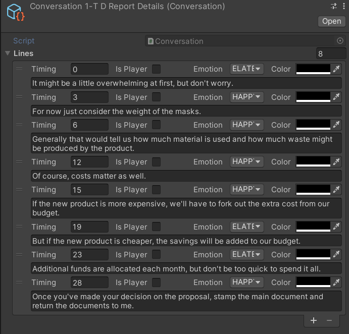

The Conversation Scriptable Object
Conversations that occur throughout the game are defined in Conversation scriptable objects. They function very much like a script in a play.

A Conversation scriptable object is made of a list of conversation lines, each line detailing:
Timing- When (in seconds, from the start of the conversation) the line should be readIs Player- Whether it is the player or the NPC speaking the lineEmotion- The emotion the NPC shows when the line is being spokenColor- The color of the text being shownText- The actual text of the line
Important
The timing of each line in the list needs to be in ascending order for the conversation to be read properly by the game. i.e. The first line in the list must have the smallest non-negative number for timing, while the last line should have the largest timing.